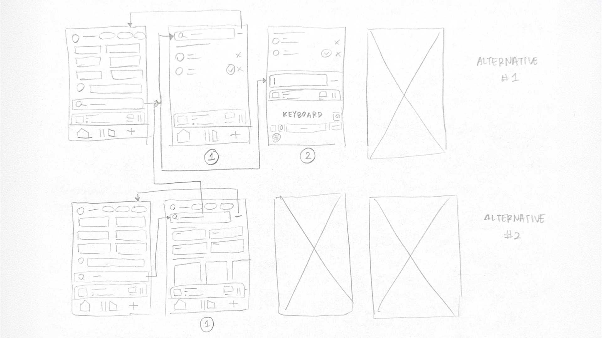
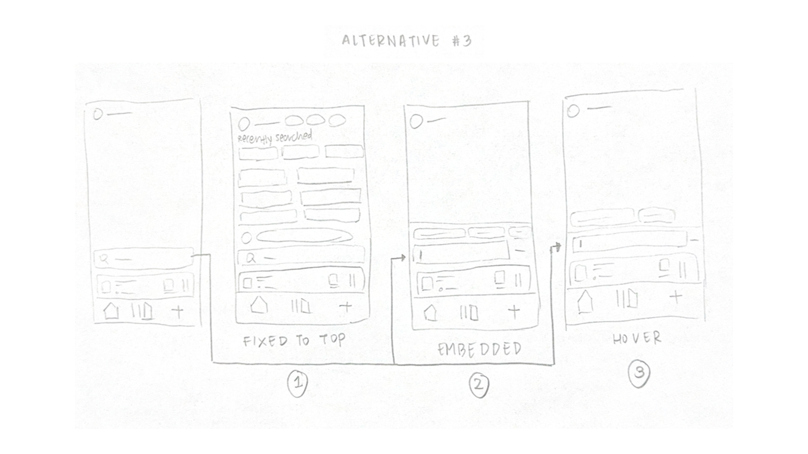

Search is high frequency.
Over half of participants reported using search multiple times per day, making even small inefficiencies meaningful over time.
Case Study / 02
Timeline
March 1 – April 8, 2026
Role
UX Researcher
Product Designer
Team
Individual HCI Project
Disciplines
Needfinding
HCI Evaluation
Prototyping
Mobile UX
Overview
This project investigated how Spotify’s mobile search experience could better support both known-item retrieval and exploratory discovery. Search is a primary interaction mechanism for locating songs, artists, playlists, podcasts, and other audio content, but the current flow can introduce small delays through tab switching, mixed result types, and repeated scanning.
I redesigned the experience around a persistent bottom search bar that keeps search accessible from the Home interface, reduces navigation overhead, and supports faster one-handed retrieval while preserving discovery.
Problem Overview
Locating audio content often requires navigating to a separate Search tab, entering a query, and scanning across multiple result categories. These steps may seem minor, but they become meaningful in high-frequency and context-constrained situations such as commuting, exercising, studying, or multitasking.
How might we
Research Methods
I used a mixed-methods approach to understand where friction occurs in Spotify’s mobile search workflow and how search intent changes across contexts. Methods included a quantitative survey, semi-structured interviews, contextual apprenticeship with think-aloud observation, and heuristic evaluation of the existing interface.
View Survey Results.
Captured search frequency, perceived usability, frustration, speed, and context.
Explored retrieval behavior, exploratory search, friction points, and workarounds.
Observed real-time search behavior, hesitation, scanning, and corrections.
Evaluated visibility, match with user intent, and efficiency of use.
Research findings
The research revealed a gap between general satisfaction and repeated interaction costs. Users rated Spotify search positively overall, but interviews, observation, and heuristic evaluation showed that scanning, tab switching, and mixed content types still create friction during frequent use.
Over half of participants reported using search multiple times per day, making even small inefficiencies meaningful over time.
Retrieval-dominant users prioritized exact matches and speed, while exploratory users needed stronger support for browsing, filtering, and comparison.
Participants often searched while commuting, exercising, or multitasking, making one-handed access and reduced scanning especially important.
Needfinding insights
Findings pointed to four design priorities: minimize micro-interaction costs, better distinguish retrieval from exploration, reduce redundant navigation between Home and Search, and support fast decision-making in constrained mobile contexts.
Ideation
Brainstorming focused on interaction architecture rather than visual styling. I generated twenty design ideas across four themes: navigation elimination, motor optimization, retrieval optimization, and exploration support. Three concepts were selected for low-fidelity prototyping.
Integrates search into the Home interface with a bottom-anchored search bar, reducing the need to navigate to a separate tab.
Transitions dynamically between browsing and search states when the user begins typing, supporting retrieval and discovery in one flow.
Surfaces recent searches, frequently played content, and predicted recommendations to reduce reliance on manual search and support frequent actions.
Low-fidelity prototypes
Each low-fidelity prototype represented a different way to reduce search friction: anchoring search at the bottom, dynamically transitioning between Home and Search, or using predictive retrieval shortcuts.


First evaluation
Five participants evaluated the three low-fidelity prototypes through representative search tasks: finding a specific song, searching for a playlist by genre, and searching for an artist. Prototype 1 received the highest overall mean score and was perceived as the fastest and most intuitive option.
Highest overall mean score at 4.60 and preferred by four out of five users.
Balanced search and browsing but introduced ambiguity in state changes.
Supported discovery but felt slower for known-item retrieval.
Refine persistent search visibility, bottom placement, and unified browsing.
Final solution
The final medium-fidelity prototype integrates search directly into the Home interface. Search remains fixed at the bottom of the screen, expands inline when activated, and supports both known-item retrieval and exploratory browsing without requiring users to switch to a separate Search tab.
The search bar remains accessible at the bottom of the screen, improving reachability and reducing the repeated step of navigating to a separate Search tab.
Search expands within the Home experience, allowing users to move between discovery and goal-oriented retrieval without cognitive switching.
Search results prioritize exact matches before broader category options, reducing scanning effort during high-intent retrieval tasks.
Final prototype
The final prototype was created in Figma and demonstrated three representative tasks: finding a specific song, finding a playlist by genre, and finding a specific artist. The interaction highlights how persistent search access reduces navigation while maintaining browsing support.

Final evaluation results
In the final evaluation, five participants completed representative Spotify search tasks using the medium-fidelity prototype. Total task completion time ranged from approximately 14.4 to 18.5 seconds, with most participants completing all tasks in 9 to 10 clicks. The average error rate was approximately 6%.
Qualitative feedback indicated that participants quickly identified the persistent search bar, found the layout intuitive, and felt the design reduced navigation effort. Minor confusion around predictive suggestions suggested a future opportunity to improve labeling and visual hierarchy.
Reflection